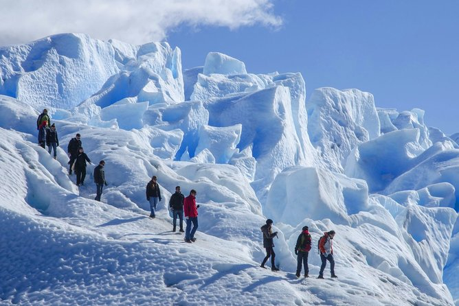
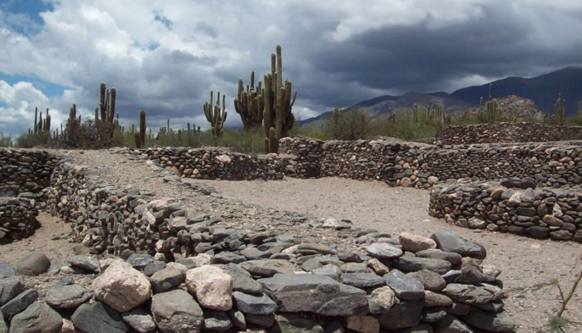
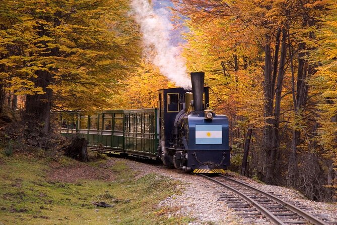

Excursiones recomendadas

Hacer trekking en un glaciar es una gran aventura. Esta visita guiada a la zona del glaciar Perito Moreno en el Parque Nacional Los Glaciares te lleva a una caminata sin complicaciones a través de algunos de los glaciares más impresionantes de la Patagonia. Todo el equipo necesario está incluido, además de que sus guías brindan información sobre la historia y la cultura de la zona a medida que avanza.
GLACIAR PERITO MORENO
Hacer trekking en un glaciar es una gran aventura. Esta visita guiada a la zona del glaciar Perito Moreno en el Parque Nacional Los Glaciares te lleva a una caminata sin complicaciones a través de algunos de los glaciares más impresionantes de la Patagonia. Todo el equipo necesario está incluido, además de que sus guías brindan información sobre la historia y la cultura de la zona a medida que avanza.
Lee más acerca de Excursión Minitrekking Glaciar Perito Moreno - https://www.viator.com/tours/El-Calafate/Minitrekking-Excursion/

Visita tres lugares únicos con este tour de 1 día desde Tucumán. Explora la encantadora localidad de Taffí del Valle, descubre la ruinas arqueológicas de Quilmes en el valle de Calchaquí y para en Cafayate, conocida por sus vinos.
TAFFI DEL VALLE, RUINAS DE QUILMES Y CAFAYATE
Visita tres lugares únicos con este tour de 1 día desde Tucumán. Explora la encantadora localidad de Taffí del Valle, descubre la ruinas arqueológicas de Quilmes en el valle de Calchaquí y para en Cafayate, conocida por sus vinos.
Lee más acerca de Taffí del Valle, ruinas de Quilmes y Cafayate - https://www.getyourguide.es/tafi-del-valle-ruinas-de-quilmes-y-cafayate/

BALLENAS EN LA PENINSULA VALDES
Contempla el majestuoso nado de las ballenas francas australes en aguas de la Península Valdés, una de las zonas de Argentina con mayor biodiversidad. Incluye un paseo en barco por el Golfo Nuevo, donde se ven a las ballenas francas australes en su hábitat natural. Durante la travesía nos desplazaremos un radio de 10 millas, según la posición de los animales.
Lee más acerca de Ballenas en La Península Valdés - https://www.civitatis.com/ar/puerto-madryn/avistamiento-ballenas-peninsula-valdes/

CATARATAS DEL IGUAZU
Experimente la estruendosa y salvaje belleza de las Cataratas del Iguazú en esta excursión de un día completo desde Puerto Iguazú. En una visita guiada por el lado argentino de las cataratas, camine por una serie de senderos, pasarelas y miradores para presenciar más de 200 magníficas cascadas, incluida la famosa Garganta del Diablo. Elija entre una serie de tres de los principales circuitos de senderismo que serpentean a través del parque nacional subtropical y descubra la vida silvestre nativa mientras se empapa de diferentes puntos de vista de las cataratas de fama mundial.
Lee más acerca de Excursión a las Cataratas del Iguazu -https://www.viator.com/tours/Puerto-Iguazu/Full-Day-Tour-to-Iguazu-Falls/

Descubre el Parque Nacional Tierra del Fuego y sus espectaculares paisajes en esta excursión de medio día desde Ushuaia. El parque nacional más austral del mundo cuenta con glaciares, lagos, montañas y abundante vida silvestre. Explora Tierra del Fuego en vehículo o mejora para incluir un viaje en el Tren del Fin del Mundo.